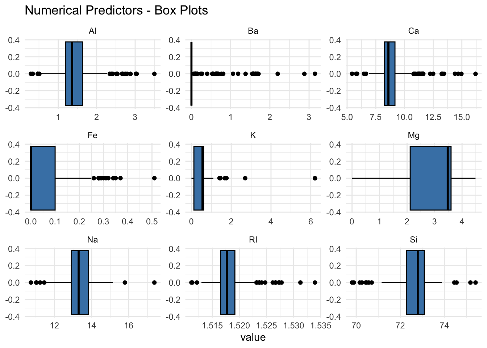
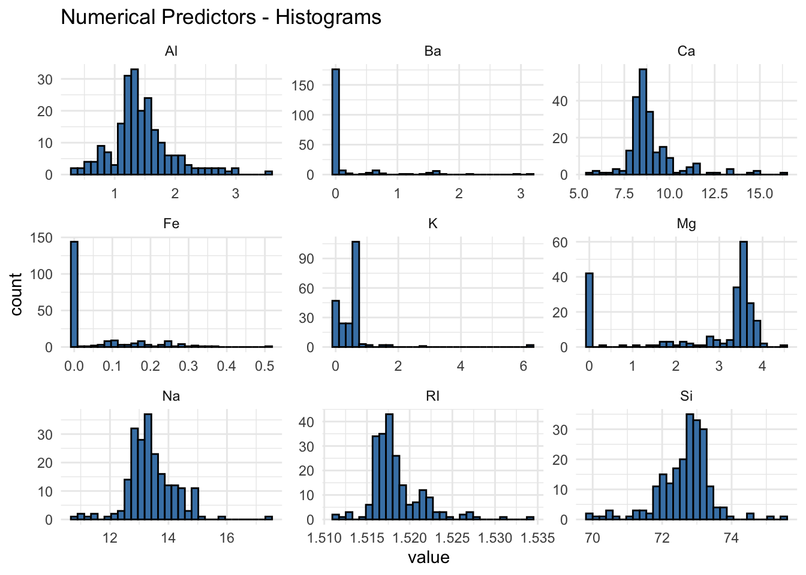
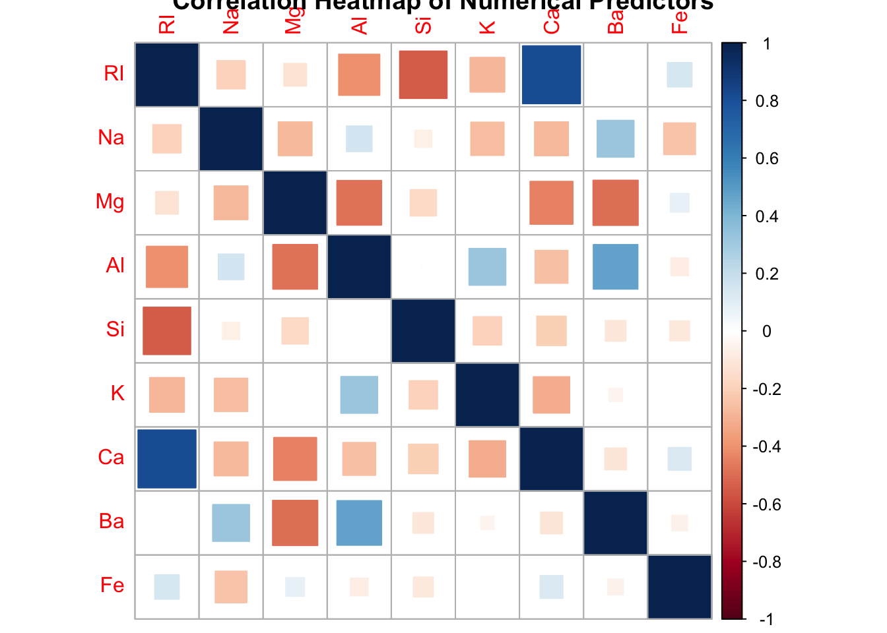
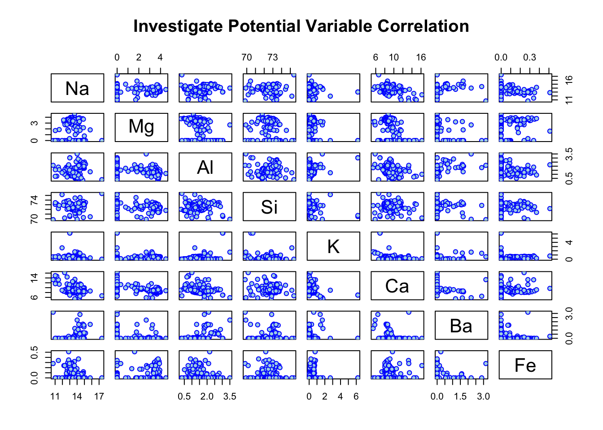
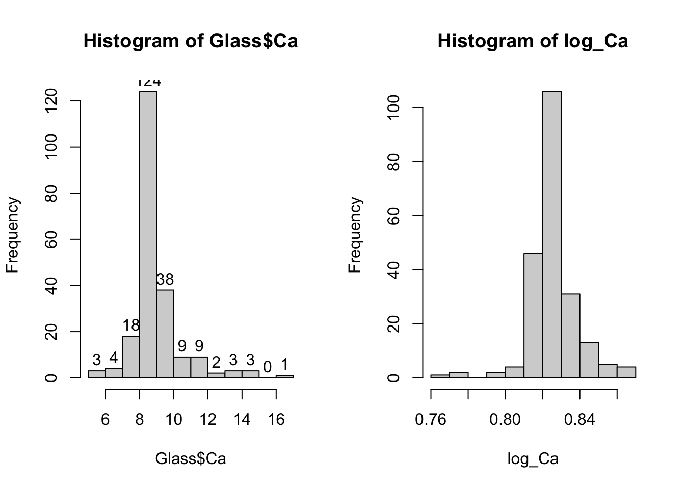
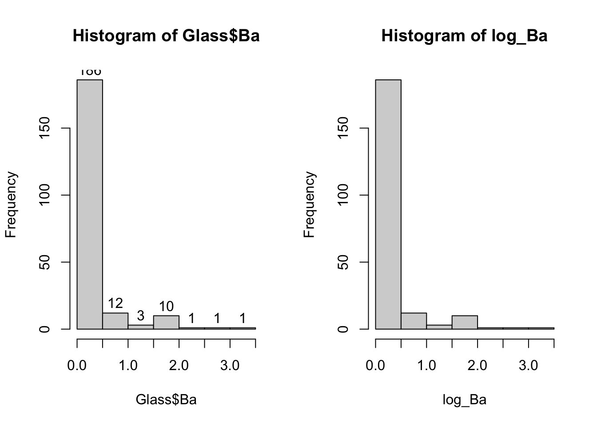
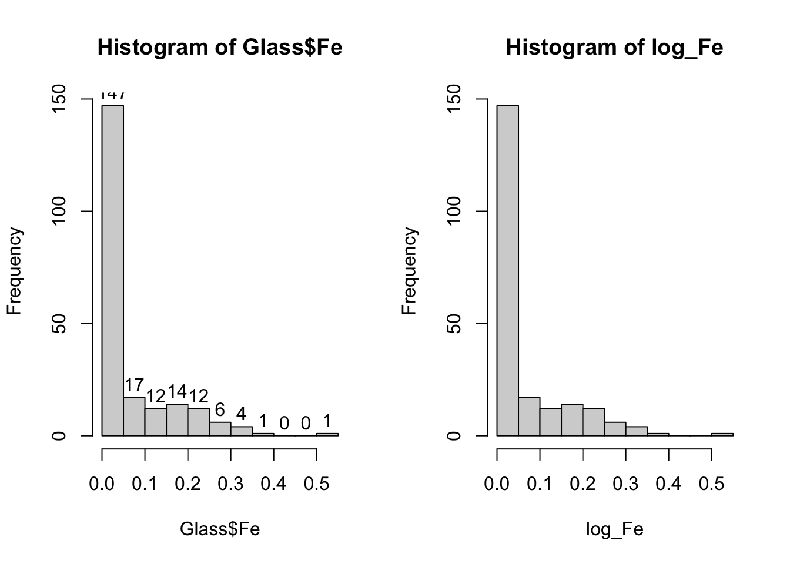
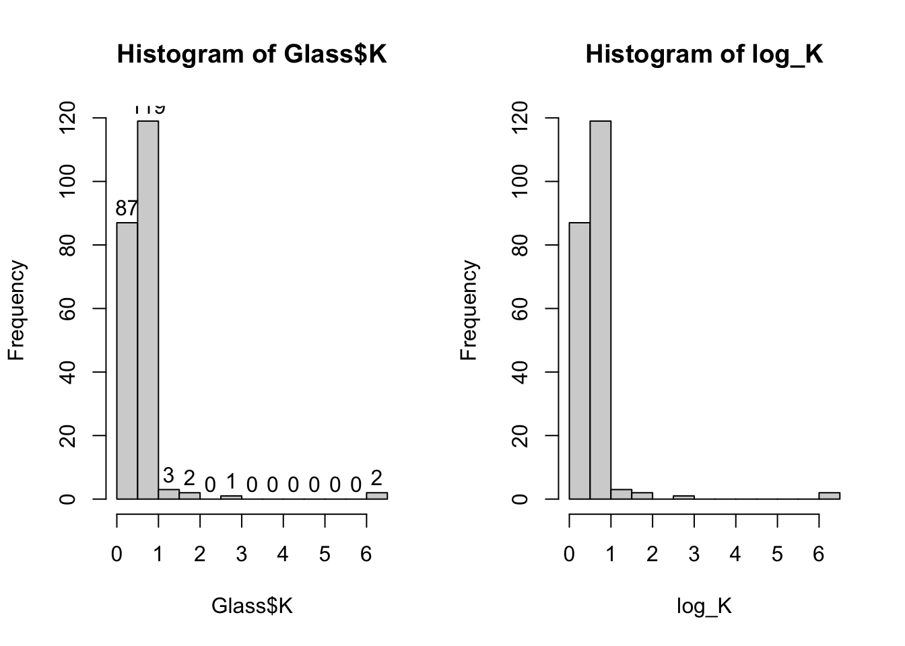
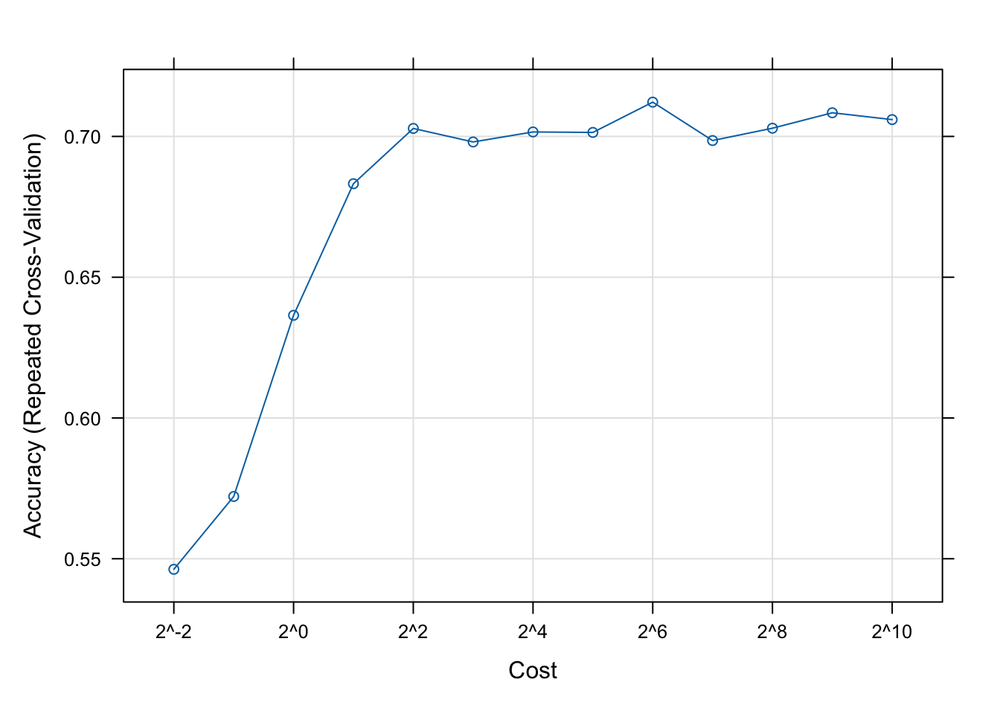

library(mlbench)
library(dplyr)
library(e1071)
library(kernlab)
library(AppliedPredictiveModeling)
library(caret)
library(ggplot2)
library(tidyverse)
library(corrplot)
data(Glass)Exercise 2
Import Libraries/Data
Data Structure
str(Glass)'data.frame': 214 obs. of 10 variables:
$ RI : num 1.52 1.52 1.52 1.52 1.52 ...
$ Na : num 13.6 13.9 13.5 13.2 13.3 ...
$ Mg : num 4.49 3.6 3.55 3.69 3.62 3.61 3.6 3.61 3.58 3.6 ...
$ Al : num 1.1 1.36 1.54 1.29 1.24 1.62 1.14 1.05 1.37 1.36 ...
$ Si : num 71.8 72.7 73 72.6 73.1 ...
$ K : num 0.06 0.48 0.39 0.57 0.55 0.64 0.58 0.57 0.56 0.57 ...
$ Ca : num 8.75 7.83 7.78 8.22 8.07 8.07 8.17 8.24 8.3 8.4 ...
$ Ba : num 0 0 0 0 0 0 0 0 0 0 ...
$ Fe : num 0 0 0 0 0 0.26 0 0 0 0.11 ...
$ Type: Factor w/ 6 levels "1","2","3","5",..: 1 1 1 1 1 1 1 1 1 1 ...Descriptive Statistics
summary(Glass) RI Na Mg Al
Min. :1.511 Min. :10.73 Min. :0.000 Min. :0.290
1st Qu.:1.517 1st Qu.:12.91 1st Qu.:2.115 1st Qu.:1.190
Median :1.518 Median :13.30 Median :3.480 Median :1.360
Mean :1.518 Mean :13.41 Mean :2.685 Mean :1.445
3rd Qu.:1.519 3rd Qu.:13.82 3rd Qu.:3.600 3rd Qu.:1.630
Max. :1.534 Max. :17.38 Max. :4.490 Max. :3.500
Si K Ca Ba
Min. :69.81 Min. :0.0000 Min. : 5.430 Min. :0.000
1st Qu.:72.28 1st Qu.:0.1225 1st Qu.: 8.240 1st Qu.:0.000
Median :72.79 Median :0.5550 Median : 8.600 Median :0.000
Mean :72.65 Mean :0.4971 Mean : 8.957 Mean :0.175
3rd Qu.:73.09 3rd Qu.:0.6100 3rd Qu.: 9.172 3rd Qu.:0.000
Max. :75.41 Max. :6.2100 Max. :16.190 Max. :3.150
Fe Type
Min. :0.00000 1:70
1st Qu.:0.00000 2:76
Median :0.00000 3:17
Mean :0.05701 5:13
3rd Qu.:0.10000 6: 9
Max. :0.51000 7:29 Variable Skewness - Calculated
# Skewness between -1 amd 1 is excellent, between -2 and 2 is acceptable, values beyond -2 and 2 considered non-normal
RI_ = Glass$RI
Na_ = Glass$Na
Mg_ = Glass$Mg
Al_ = Glass$Al
Si_ = Glass$Si
K_ = Glass$K
Ca_ = Glass$Ca
Ba_ = Glass$Ba
Fe_ = Glass$Fe
paste0('RI: ', skewness(RI_))[1] "RI: 1.60271508274373"paste0('Na: ', skewness(Na_))[1] "Na: 0.447834258917133"paste0('Mg: ', skewness(Mg_))[1] "Mg: -1.13645227846653"paste0('Al: ', skewness(Al_))[1] "Al: 0.89461041611312"paste0('Si: ', skewness(Si_))[1] "Si: -0.720239210805621"paste0('K: ', skewness(K_))[1] "K: 6.46008889572281"paste0('Ca: ', skewness(Ca_))[1] "Ca: 2.01844629445302"paste0('Ba: ', skewness(Ba_))[1] "Ba: 3.36867996880571"paste0('Fe: ', skewness(Fe_))[1] "Fe: 1.7298107095598"Box Plots
Glass %>%
select_if(is.numeric) %>%
gather() %>%
ggplot(aes(value)) +
geom_boxplot(color='black', fill='steelblue') +
facet_wrap(~key, scales = 'free') +
ggtitle(("Numerical Predictors - Box Plots")) +
theme_minimal()
Histogram Plots
Glass %>%
select_if(is.numeric) %>%
gather() %>%
ggplot(aes(value)) +
geom_histogram(color='black', fill='steelblue') +
facet_wrap(~key, scales = 'free') +
ggtitle(("Numerical Predictors - Histograms")) +
theme_minimal()
Heatmap Correlation
Glass %>%
select_if(is.numeric) %>%
cor() %>%
corrplot(method = "square", title = 'Correlation Heatmap of Numerical Predictors')
Scatterplot Correlation
plot(~Na+Mg+Al+Si+K+Ca+Ba+Fe,
data=Glass,
main="Investigate Potential Variable Correlation",
col='blue',
bg='lightblue',
pch = 21)
Question A) & B)
To explore the predictor variables, I created boxplots, histograms, scatterplots, and a heatmap to understand the distributions and relationships among the predictor variables to gain a better understanding. There are outliers in our dataset for variables Ca, Fe, K, and Na. Variables Ba, Ca, Fe, and K are skewed to the right, indicating that we might improve our classification model by applying a transformation.
Question C)
Since we identified skewness in variables Ba, Ca, Fe, and K, we applied a BoxCox transformation to each variable. After reviewing the distribution plots of our transformed variables, we concluded that the transformation was only slightly effective for the Ca variable. See the below outputs comparing the histogram plots between the original and transformed data for each variable.
Make transformations on 3 skewed variables: K, Ca, and Ba
transform_Ca <- BoxCoxTrans(Glass$Ca)
log_Ca <- predict(transform_Ca, Glass$Ca)
#hist(log_Ca)
#log_Ca
transform_Ba <- BoxCoxTrans(Glass$Ba)
log_Ba <- predict(transform_Ba, Glass$Ba)
#hist(log_Ba)
#log_Ba
transform_Fe <- BoxCoxTrans(Glass$Fe)
log_Fe <- predict(transform_Fe, Glass$Fe)
#hist(log_Fe)
#log_Fe
transform_K <- BoxCoxTrans(Glass$K)
log_K <- predict(transform_K, Glass$K)
#hist(log_K)
#log_Kpar(mfrow = c(1, 2))
ca = hist(Glass$Ca)
text(ca$mids,ca$counts,labels=ca$counts, adj=c(0.5, -0.5))
hist(log_Ca)
par(mfrow = c(1, 2))
ba = hist(Glass$Ba)
text(ba$mids,ba$counts,labels=ba$counts, adj=c(0.5, -0.5))
hist(log_Ba)
par(mfrow = c(1, 2))
fe = hist(Glass$Fe)
text(fe$mids,fe$counts,labels=fe$counts, adj=c(0.5, -0.5))
hist(log_Fe)
par(mfrow = c(1, 2))
k = hist(Glass$K)
text(k$mids,k$counts,labels=k$counts, adj=c(0.5, -0.5))
hist(log_K)
Question 4)
set.seed(231)
sigDist <- sigest(Type~ ., data = Glass, frac = 1)
sigDist 90% 50% 10%
0.03407935 0.11297847 0.62767315 svmTuneGrid <- data.frame(sigma = as.vector(sigDist)[1], C = 2^(-2:10))
svmTuneGrid sigma C
1 0.03407935 0.25
2 0.03407935 0.50
3 0.03407935 1.00
4 0.03407935 2.00
5 0.03407935 4.00
6 0.03407935 8.00
7 0.03407935 16.00
8 0.03407935 32.00
9 0.03407935 64.00
10 0.03407935 128.00
11 0.03407935 256.00
12 0.03407935 512.00
13 0.03407935 1024.00set.seed(1056)
#It may take a while to run
svmFit <- train(Type~ ., data = Glass, method = "svmRadial",
preProc = c("center", "scale"),tuneGrid = svmTuneGrid,
trControl = trainControl(method = "repeatedcv", repeats = 5))
plot(svmFit, scales = list(x = list(log = 2)))